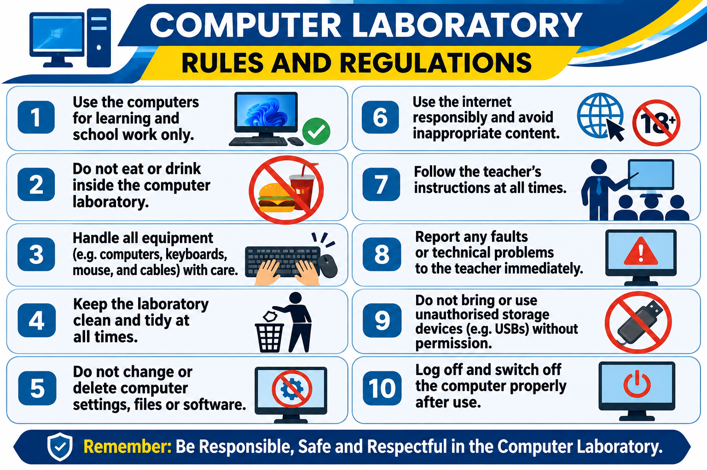

Virtual Library & Open Educational Resources
Find digital learning materials to support classroom teaching, independent study and examination preparation, All in one place.
Student learning resources
Choose a resource and select Download PDFs..
| No. | Resource title | Level / subject | Format | Action |
|---|---|---|---|---|
| 1 | Senior Two Chemistry Revision Notes | Senior Two • Chemistry | 📥Download PDF | |
| 2 | O-Level Computer Studies Study Outline | O-Level • ICT | 📥Download PDF | |
| 3 | Senior Three Biology Study Notes | Senior Three • Biology | 📥Download PDF | |
| 4 | Senior Four Mathematics Practice Paper | Senior Four • Mathematics | 📥Download PDF | |
| 5 | ICT Laboratory Rules & Safety Chart | All learners • ICT | 📥Download PDF |

How to use the Virtual Library
- Identify your class level and subject.
- Choose the resource that matches your learning need.
- Select Download PDF and save it to your device.
- Open the downloaded document using a PDF reader.
- Follow your teacher's guidance when using revision materials.